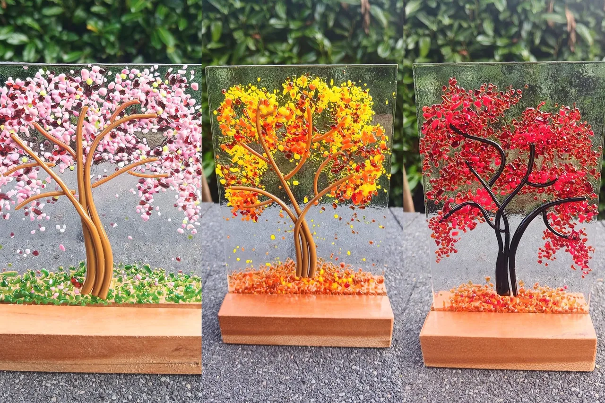
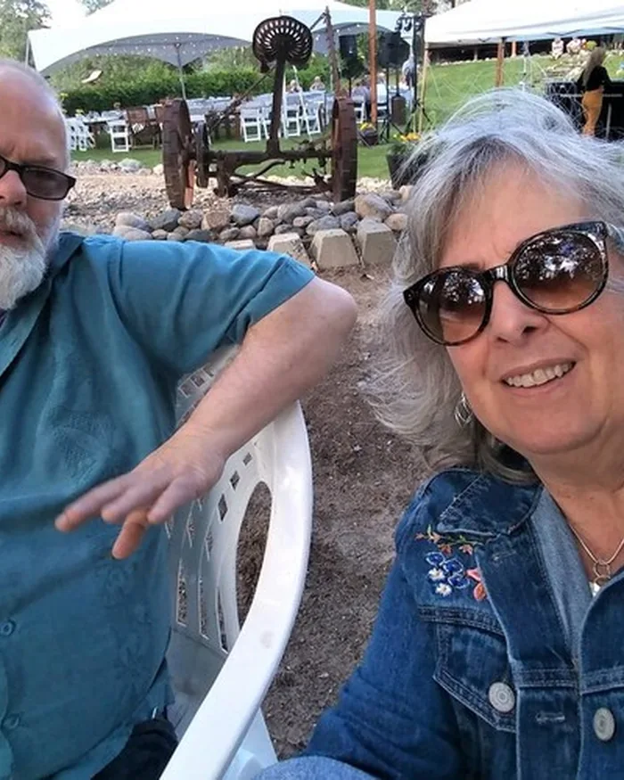
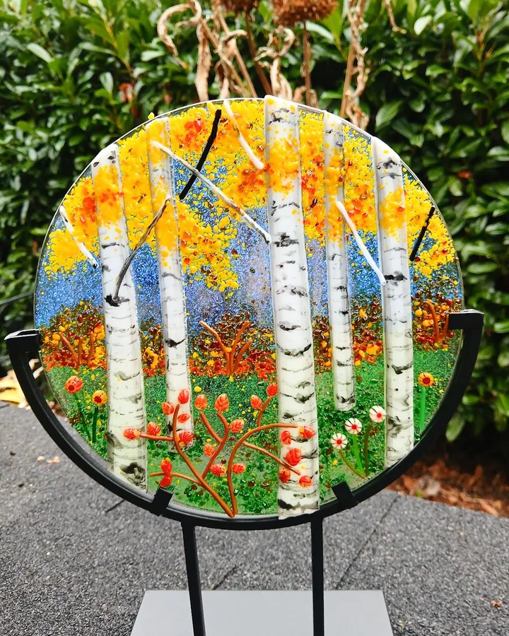
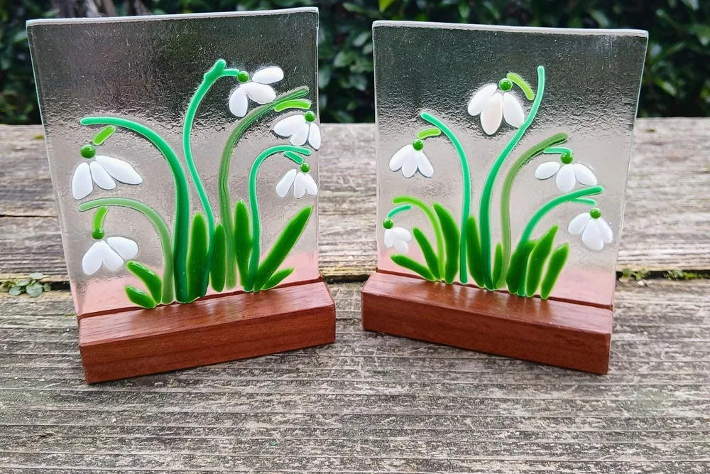
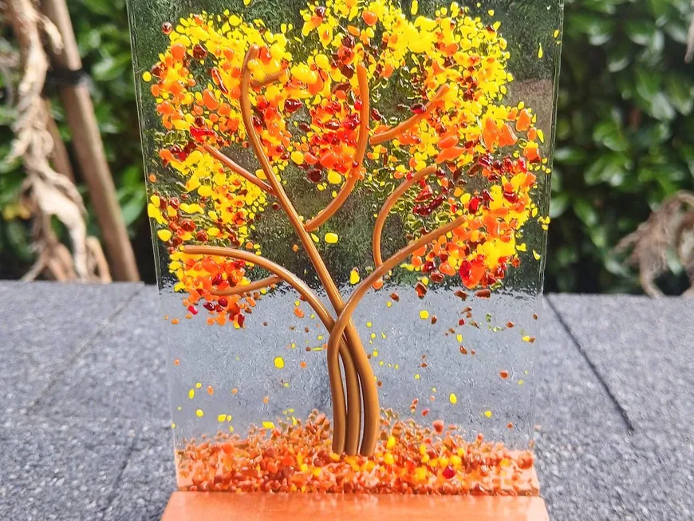
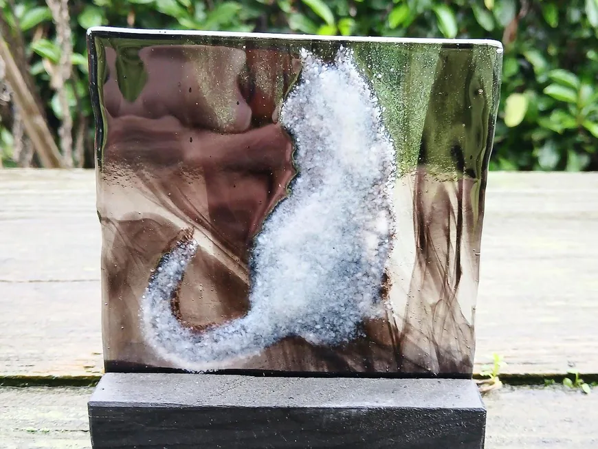
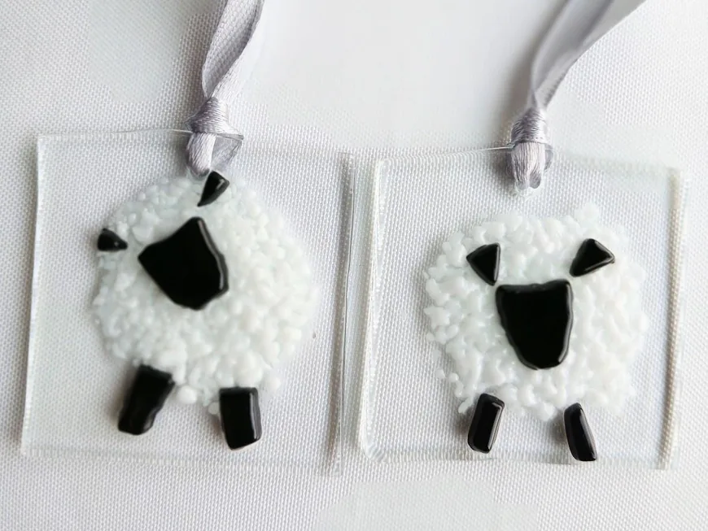
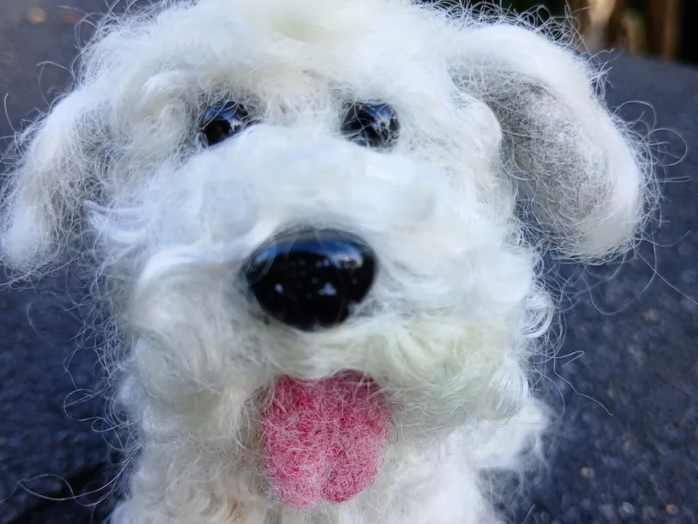

Inspired by nature
Trees, seasons, oceans and animals from the natural world.

Glass & fiber artist · Tacoma, Washington
Fused glass and needle felting, inspired by the natural world

Meet the Artist
Owner & artist of 2 Gray Hares
I come from a large family and have enjoyed crafting since I was a child. I started glass fusing in 2022, and I have been needle felting all of my life. My husband, the other Gray Hare, makes the wooden stands and is my muse. :)
she/her/hers · Glass and Fiber Artist
Our story

01 How it started
Crafting all of my life! Fused glass lets me bring my lifelong love of nature into a luminous medium. Over the past 4 years it has become a deeply personal exploration of the natural world, from the delicate, fluid motion of jellyfish to majestic, sweeping mountain scenes.
My multi-seasonal forest settings use layered kiln glass to evoke the changing moods of the wilderness, with rich texture, vibrant color and a real sense of dimension.
I also make custom work that translates love and legacy into glass: memorial pieces that honor the spirit of beloved animals, and ocean wave designs that gracefully incorporate the ashes of loved ones.
— Karen
02 Where & how it’s made
Each piece is built up from layers of glass, then fired so the colors melt together.

03 What makes it special
Trees, seasons, oceans and animals from the natural world.
Memorial pieces for beloved animals and loved ones.
Glass by Karen, wooden stands by her husband.
Reviews
What we make
Over a hundred glass pieces and a few felted friends. Here is what you will find in the shop.

Multi-seasonal trees and forest scenes in layered kiln glass, set in wooden stands.

Cats, crows, gulls and more, plus custom memorial pieces for beloved animals.

Little pieces of glass to hang in a window or give to a friend.

Wool otters, dogs and imaginary friends, needle felted by hand.
Everything is sold through the online shop, with secure checkout and buyer protection.
Stay in the loop
Sign up to be the first to know about sales and new products.
You’re in! 🎉
Continue to the shopEvery piece is made by hand in Tacoma. Thank you for stopping by!
Visit the shop